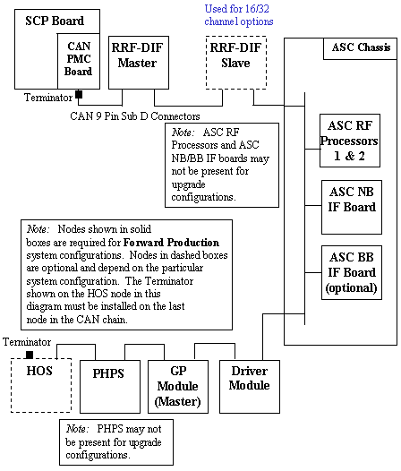

Proprietary to General Electric Company
Direction 5440000, Rev# 5
Signa HDxt Service Methods
Module Version 1.0, Version Date 4/26/07
Proprietary to General Electric Company |
CAN Link Diagnostics
The purpose of this diagnostic is to perform a read-write test on any available nodes on the CAN network.
The Controller Area Network (CAN) is a communications layer used to communicate serially to nodes over a high speed data layer. The CAN network uses a protocol called CANopen to communicate with its peripherals, or nodes. Each node has a unique node Id (1-31) which helps determine where each message is intended to arrive.
This test will determine which nodes are available on the link by listening in to the network and determining which nodes are available based on their Node ID's. Once the nodes are detected, a walking ones pattern is sent to each node and read back to verify the communications link. The test can be set to run several iterations to help find any intermittent failures.
The Force Reset button is available to force a reset of the nodes before running the test. This is used in the case when a reset is required to put all the nodes in a known normal state. The test however, should be first run without the reset to determine if any nodes are in a bad state. The force reset button should be used as a fall back to bring the nodes back to a normal state.
The nodes that are currently available to be detected by this test are the following:
PHPS (Node ID 1)
Driver Module (Node ID 2)
RRF-DIF Master (Node ID 4)
RRF-DIF Slave (Node ID 5)
ASC BB IF Board (Node ID 6)
ASC NB IF Board (Node ID 7)
ASC RF Processor 1 (Node ID 8)
ASC RF Processor 2 (Node ID 9)
GP Module (Master) (Node ID 14)
HOS (Node ID 16)
| NOTE: | For systems with a single GP module, the GP module is referred to as a GP Module (Master). Systems with 2 GP Modules contain a GP Module (Master) and a GP Module (Slave). |
None
Illustration 1: CAN Link For Upgraded Systems

This diagnostic first detects all the available nodes on the CAN link by monitoring the Node Guarding messages. If Force Reset is checked, all CAN nodes are reset prior to monitoring the Node Guarding messages. Once any nodes are detected, they are logged to the screen and then a data path test is run on each of them sequentially. The data path test consists of writing a walking one's pattern on the Diagnostic Dictionary Index on the node and reading it back. The received data is checked to ensure its validity. The data path test is repeated three times on each node. Any errors will result in an error message logged and the information written to the screen.
The test can be set to run several iterations to help find any intermittent failures.
The Force Reset button is available to force a reset of the nodes before running the test. This is used in the case when a reset is required to put all the nodes in a known normal state. The test however, should be first run without the reset to determine if any nodes are in a bad state. The force reset button should be used as a fall back to bring the nodes back to a normal state.
This test compares the nodes that are detected against the system configuration and emulation settings. All nodes that are detected, configured, and not emulated will be tested and test results will be displayed.
A status message will be displayed for any nodes not tested that are detected and/or configured. Here is a list of reasons a node may not be tested.
Not detected
Not detected - Node configured and emulated
Not tested - Node detected but configured and emulated
Not tested - Node detected but emulated
Not tested - Node detected but not configured
If any configuration or emulation result is seen, verify that the configuration of the system is correct and that no emulations exist for that node.
If nodes are not detected, the reason could be
Driver Module powered off
CAN Terminator not installed on the SCP
CAN Terminator not installed on the last node on the CAN link
Not all nodes connected on the CAN link, including SCP, or CAN cable disconnected
System configuration incorrect, if only some nodes not detected
SCP or CAN PMC failures. Run the CAN datapath diagnostic to verify SCP to CAN PMC communication
None
None